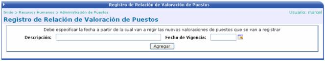
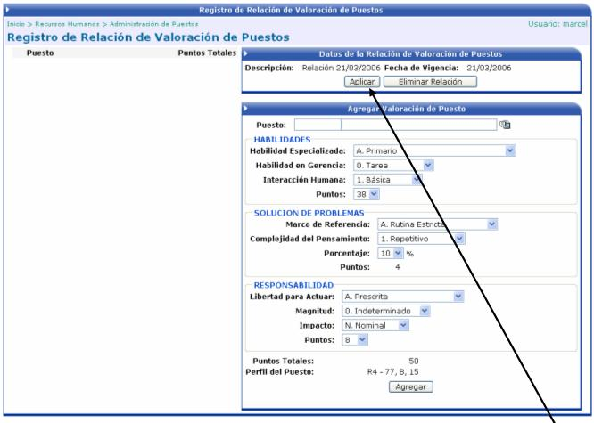

En esta opción se harán los registros de evaluación de puestos. Para esto se debe se establecer una fecha de vigencia a partir de la cual van a regir dichas valoraciones.

Después de establecida la fecha y la descripción se presiona el botón y se procede a agregar los aspectos a tomar en cuenta para realizar la valoración del puesto. Se debe de seleccionar el puesto y luego se comienza con la escogencia de los puntos a evaluar:
Cada uno de los valores que se desplieguen en las cajas de selección, estarán definidos en las tablas de puntuación correspondientes a cada aspecto. Dichos cuadros se mostrarán mas adelante.

Una vez que se hayan definido las valoraciones para los diferentes puestos, se procede a Aplicar la relación de valoración. Cuando se aplica dicha relación, se va agregando a un historial de evaluaciones, para luego poder consultar o ver gráficamente la información de las evaluaciones de los puestos.